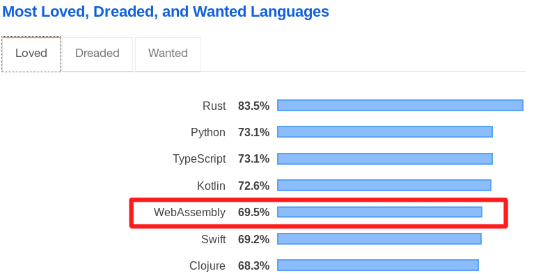
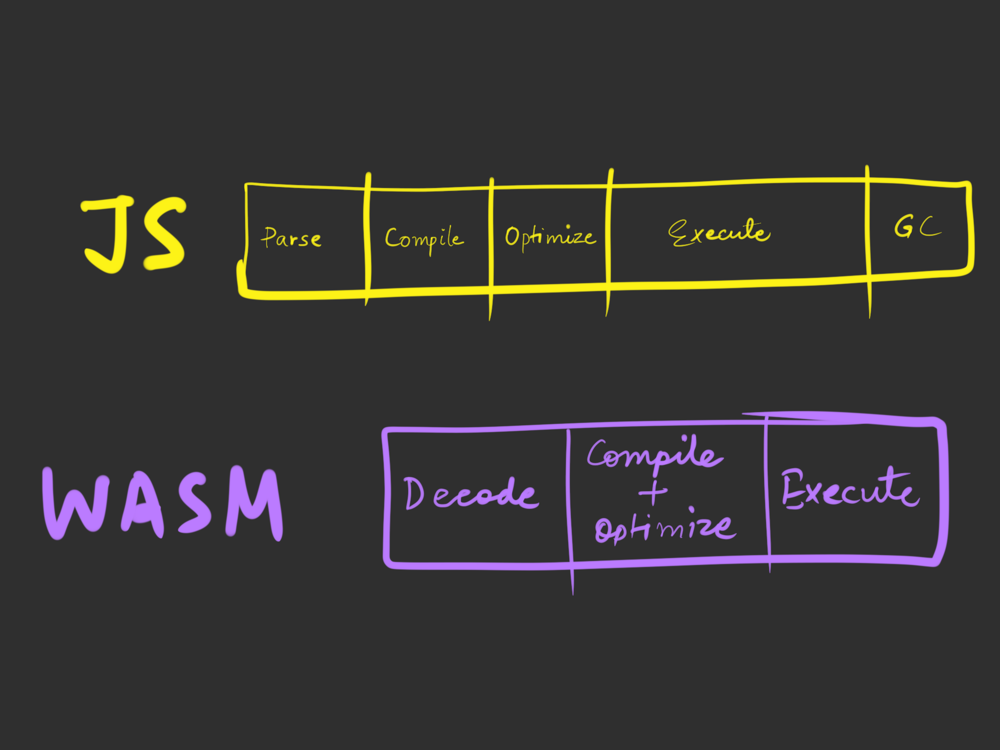

Tale of WebAssembly and Rust
-- whoami -- creativcoder on 🌐
Data Engineer at Ather Energy
Blog at: creativcoder.github.io
Author of Mastering Rust 2nd edition https://cutt.ly/eGa49y
Compilers and programming language aficionado
>> Motivation and origin
>> What exactly is WebAssembly?
>> Using WebAssembly
>> Compiling Rust to WebAssembly
>> Higher level tools and library ecosystem
>> When and where can I use WebAssembly?
>> Demo #1 - Exposing a Rust function (Follow along)
>> Demo #2 - A live markdown editor (Overview)
>> WebAssembly in the wild
>> Q/A
284 ms
Source: https://www.humanbenchmark.com/tests/reactiontime/statistics
Performant web applications is a top priority these days.
Another reason: Code Reuse
WebAssembly is suite of technologies that allows:
1) Write code in any language.
2) Run code on any platform.
3) Run at near native speed.
>> Native Client aka NaCl (Google) 2011
>> Asm.js (Mozilla) 2013
as an attempt to run native apps on web.
>> Not cross-platform (Can only run on Chrome)
>> Not defined as a standard spec
>> Allows near native speed of code from other languages.
>> Lowers the dynamic-ness of JS types by introducing syntactic changes in code
var first = 5; // in JS becomes
var second = first | 0; // in asm.js This removes much of the dynamic checks at runtime by the JS interpreter.
You don't write, you compile to asm.js
Using Emscripten - An LLVM IR to Javascript (asm.js) compiler. https://emscripten.org/
Problem with asm.js: It's javascript again, which takes time to parse.
Major browser vendors came towards a consensus on the expectations and the design philosophies. They defined a standard, that became WebAssembly!

>> Successor to
asm.js >> Has a standard W3C specification: http://webassembly.github.io/spec/core/index.html
>> Shipped in all major browsers
>> Built mainly for running native apps on web, but not limited to.

Why such a hype?
>> Requires no runtime checks and executes directly.
>> No garbage collection required; uses a simple linear memory buffer.
>> Parses 20x faster than asm.js code.

See the Pen WebAssembly Performance Demo by Jason Tiscione (@jtiscione) on CodePen.
1) The Core API: Defines the bytecode format, instruction, VM machine model. The WebAssembly virtual machine is a stack-based machine.
But,
Wait! What is a stack machine?

S-expression (wat) format of wasm code. (Only for debugging purpose)
>> WebAssembly.Module: The smallest unit of code that is executable or can be instantiated.
Can be written in many languages:
such as C,C++, Rust, Go, C#, Java, Typescript.
>> WebAssembly.Instance: An instance of a running wasm code.
>> WebAssembly.Memory: A linear memory buffer for allocations during program execution.
>> WebAssembly.Table: Lookup table for functions pointers
>> i32
>> i64
>> f32
>> f64.
Any complex data type from other languages need to be converted / serialized as sequence of bytes.
https://twitter.com/msftsecresponse/status/1151233411106799623
Recipe
>>
rustup target add wasm32-unknown-unknown >>
cargo new my_wasm_lib --lib >>
crate-type = "cdylib">>
cargo build --target wasm32-unknown-unknownExposing a Rust function (follow along)
* WebGL code
* Neural network training in browser
* Scientific computing in browser
* Simulation code
* Game engines in browser
* Cryptocurrency mining and blockchain systems
Usual places where Javascript is sufficient.
Making and JS and wasm requires copying data back and forth (an overhead).
>> Try WebAssembly online
>> wasm-pack: One stop shop for building wasm modules
>> wasm-bindgen Provides richer Rust types to JS through wasm
>> js-sys wasm-bindgen bindings for JS APIs
>> web-sys wasm-bindgen bindings for Web DOM APIs
Let's spin up a live markdown editor which uses Rust library compiled to WebAssembly.
>> E-bay
>> Figma
>> Cloudflare
>> Unity
and many more in the the tweet thread below:
https://twitter.com/JamesLMilner/status/1151824280914731008?s=08
>> Lin Clarks's series
>> Rust wasm book
>> Wasm team
>> This slide
>> Wasm vs Asm.js
>> Wasm FAQ
>> Nebulet
>> Lucet
>> Life
>> WASI - Wasm system interface
>> Wasmtime